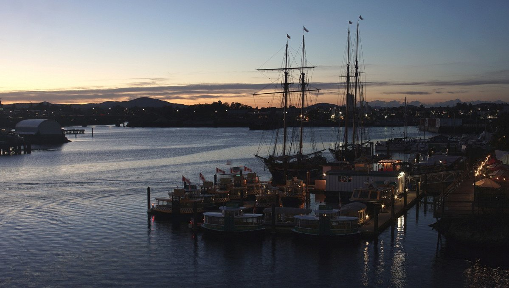
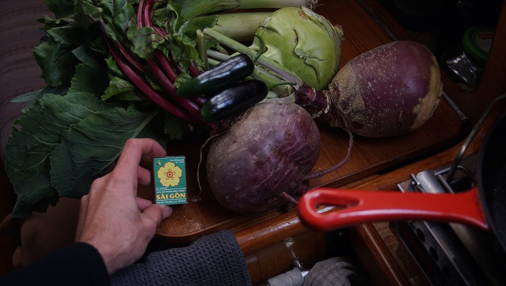
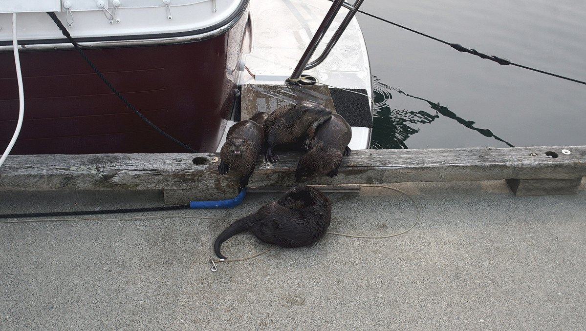
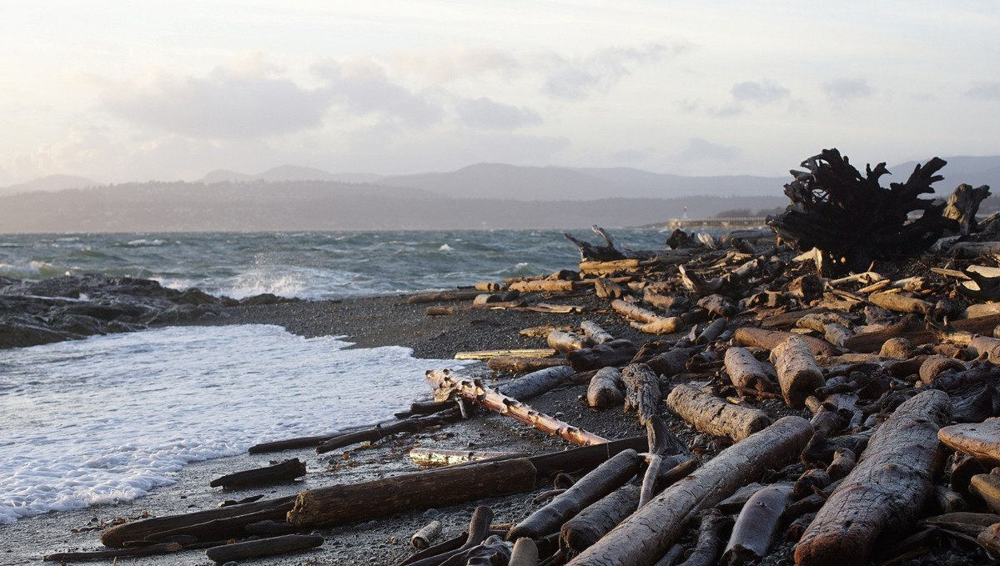
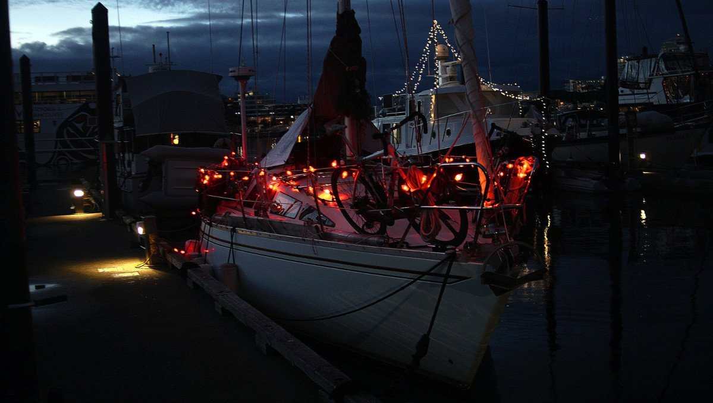

victoria
Note. What we refer to on this page as Victoria is the traditional, stolen, unceded land of the Songhees, Esquimalt, WSANEC, Tsartlip, Tseycum, Pauquachin, Scia'new, Tsawout and T'Sou-ke Nations.
After our crossing the north pacific ocean in 2021 we stayed in Victoria, BC in Canada for a little while.
While there, we experienced our first ever snow with the boat.

Other snow photos: [1],[2],[3] and [4]
![[1]](../media/content/travel/victoria_snow01.jpg){kind=link}
![[2]](../media/content/travel/victoria_snow03.jpg){kind=link}
![[3]](../media/content/travel/victoria_snow04.jpg){kind=link}
![[4]](../media/content/travel/victoria_snow05.jpg){kind=link}
We stayed on their docks for 4 winters, as part of their winter moorage program which allows a small percentage of boaters to live in the marina on their boats from October to mid-May. They have a bin for compost, and a little boat goes around every week to suck up the waste from each slip (we had no need of this service, because we had a dry toilet).
Showers and laundry are a short 10 minute walk away.
Fresh produce. For fresh produce, we like to take advantage of the weekly specials offered by Root Cellar on Cook street(note that we only ever buy produce there, the rest is very expensive), and we would sometimes pick up boxes from The Good Food Box, which is a non-profit fruit and vegetable distribution system. For seasonal fresh food markets, check out this Farm Map. In the fall, we like to volunteer for LifeCycles to pick fruit from trees in Victoria. This organization teams up with locals who have fruit trees on their properties but that don't have time to take care of them, as a volunteer, you sign up for picks and get to keep a lot of the fruit afterwards.
Dried goods. For dried goods, we would take our bikes over to Esquimalt to visit Wholesale Club. Wholesale Club is like Costco, but without needing a membership, the prices for large bags of dried legumes, rice and pasta are very good. Bulk Barn on Yates in downtown Victoria is a good place for spices in bulk, or for rare items like wheat berries and TVP, but their products are not always cheap.
Bread. We love buying fresh bread at Crust Bakery on Fort street. Their baguettes and sourdough breads are excellent, and not too pricey (cheaper than buying baguettes at Market on Yates).
Eating out. We don't eat out a lot, just because it's pricey, but we like going to Fern Cafe and Bakery on North Park street. They serve affordable plantbased comfort food. Otherwise, Green Cuisine offers a tasty pay-per-weight buffet(not super cheap, but very good quality), and they make excellent pizza(you can order whole pizzas). Up in Sidney, we like to visit Fish on Fifth, they're the only place that offer a plantbased fish and chips. They offer "not-cod", which is a deep-fried piece of tofu wrapped in nori- it is excellent.
Drinks. We enjoy sharing a drink at The Bent Mast on Simcoe Street in James Bay, especially on cold winter evenings. We also like to go to Herald Street Brew Works on Herald street, or The Drake(they have a great elevated outdoor terrace in the Market Square courtyard) for a quiet afternoon drink. All of the above places serve non-alcoholic options. To buy beer, wine or non-alc drinks, we love visiting The Strath on Douglas street.
Coffee. We buy whole beans from Murchies on Government street, they sell small quantities of whole beans as well as large 5 lbs bags. Murchies also sells excellent peppermint tea (and many other kinds of tea in bulk). Our favorite coffee place is Habit Coffee, they have one location on Pandora, and another on Yates. Habit makes an excellent soy flat white.
Entertainment. The Vic Theatre on Douglas and Capitol 6 on Yates are 2 good places to catch a movie in Town. The Vic Theatre only has one screen, they are volunteer-run, they often do screenings of older movies and of indie films, if you're around in February check out the Victoria Film Festival line-up. The Imax theatre, adjoined to the Royal BC Museum, also has screenings of popular films as well as showings of really great documentaries throughout the year. Russell books on Fort street has a good collection of new and used books, but the very best used book store is up in Sidney, it's called The Haunted Bookstore on Third street.
Marine good, or boating supplies. Marine goods are available at Trotac on Gorge Rd, the staff there is incredibly knowledgeable, and friendly. Industrial Paints and Plastics is a good resource for new water/waste tanks, or for epoxy, and fibreglassing supplies. There are many metal shops in the area that can help with projects, like Silverfern Stainless. The Castle hardware store(located on Cook and Bay street) is great for tools, wood, general supplies, they can make wood cuts for you at a resonable price. If you're looking for beefy fasteners, check out Fastener Force on Hillside Ave.
On warm sunny days we like to cycle up to Sidney following the Lochside bike trail. Check out Recyclistas on the Lochside trail for bike repairs.
There are often otters on the docks, they are very cute, but they like to defecate on dock lines. If you have a swim grid, they will occupy it in your absence. They know when you are gone, and will not miss an opportunity to visit your cockpit or your dinghy.
Walks. We like walking through Beacon Hill Park and over to Dallas Road. In calm, dry weather, we enjoy walking along the rocks bordering the shore line, it's possible to walk along the water from Ross Bay Pebbles Beach, all the way to the end of Holland Point Park to the west. Good shoes and dry weather are a must. We also like to walk along the breakwater on the big concrete blocks lining its outer wall. During stormy weather, taking the Holland Point Park shoreline trail(not on the rocks, but following the main path) to watch the breakers on shore is impressive.
Because our boat was connected to shore power, we got to install christmas lights in December. The red gave Pino a very eerie look.
